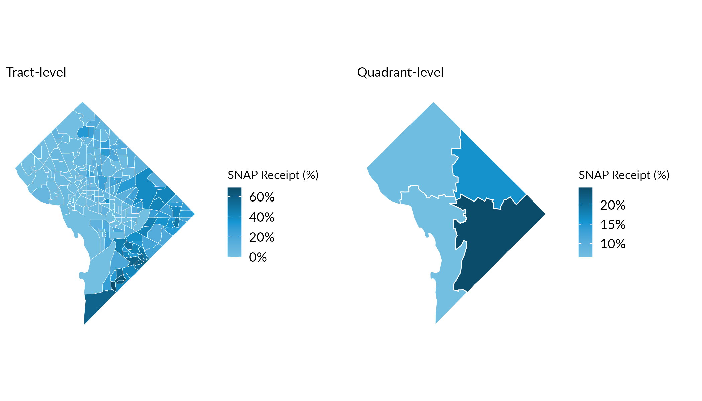
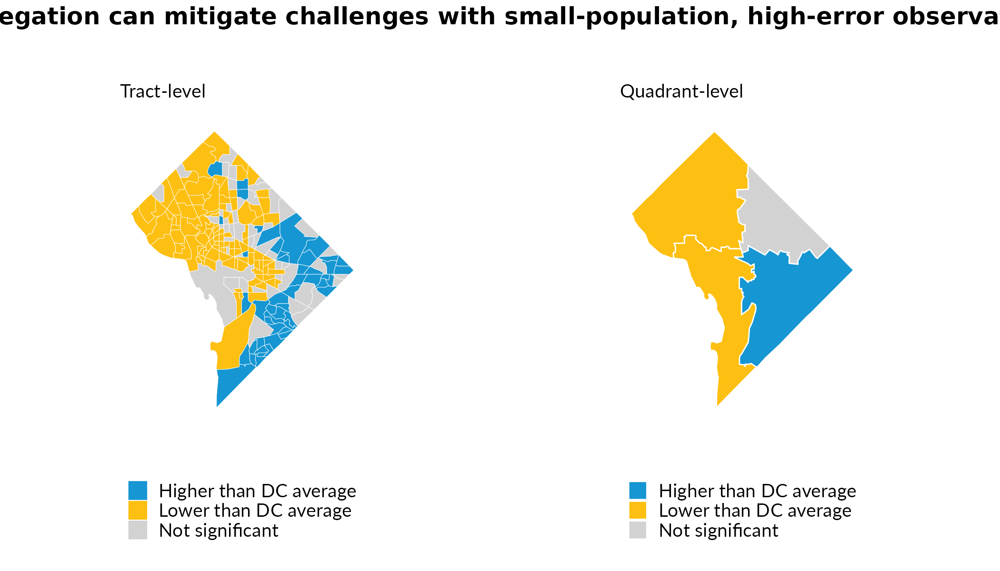

Translating ACS Data to Custom Geographies
custom-geographies.RmdFor many ACS-supported geographies and variables, sample sizes can lead to problematically large margins of error (MOEs). For example, census tracts are useful geographic units because they reveal spatial nuance, but in many cases, their MOEs are larger than the actual estimates they accompany. (Note that similar issues arise with small-population places and counties, among many other geographies.) While it’s easy to simply ignore these MOEs, estimates with large MOEs can offer a very misleading sense of nuance and precision, leading to incorrect inferences and decisionmaking. And for more rigorous analysis that looks for statistically significant differences, large MOEs at, for example, the tract level, make it difficult to detect meaningful differences between areas—even when real differences exist.
Another challenge is that much decisionmaking occurs at geographies that are not supported directly by the ACS. Think, for example, of school districts, political wards, a city’s neighborhoods, or the unincorporated area governed by a county. To translate (or “interpolate”) data to these geographies can require significant work, and the process of accurately interpolating not just estimates but also their MOEs is both error-prone and time-intensive to the point where very few analysts do so. But MOEs are as fundamental to interpreting ACS data as are ACS estimates themselves.
interpolate_acs() addresses some of these challenges by
supporting users in interpolating both ACS estimates and MOEs to
user-defined geographies. It requires a crosswalk that specifies the
share of source geography values that should be allocated to each target
geography, though for the special case where source geographies are
perfectly nested within target geographies (e.g., tracts within
counties), the function assigns weights of one to every observation (the
case when weight = NULL). Note that
interpolate_acs() always returns a non-spatial dataframe,
so geometry must be managed separately.
Example: DC Quadrants
We’ll demonstrate interpolate_acs() first using
tract-level data for Washington, DC, comparing the share of population
receiving SNAP benefits across “quadrants”. We pull tract data with
spatial = TRUE because we need the geometry both for
assigning tracts to quadrants (via centroids) and for dissolving tract
boundaries into quadrant boundaries later. Note that this is the simple
case of interpolation where every source geography maps to one and only
one target geography. We address the more complex case later.
dc_tracts = compile_acs_data(
years = 2024,
tables = "snap",
geography = "tract",
states = "DC",
spatial = TRUE)Creating Custom Geographies
For illustration, we’ll create four quadrants of DC by assigning tracts to a quadrant based on their centroid coordinates.
# Calculate tract centroids and assign to quadrants
dc_tracts = dc_tracts %>%
mutate(
centroid = st_centroid(geometry),
longitude = st_coordinates(centroid)[, 1],
latitude = st_coordinates(centroid)[, 2],
quadrant = case_when(
longitude < median(longitude) & latitude >= median(latitude) ~ "Northwest",
longitude >= median(longitude) & latitude >= median(latitude) ~ "Northeast",
longitude < median(longitude) & latitude < median(latitude) ~ "Southwest",
longitude >= median(longitude) & latitude < median(latitude) ~ "Southeast")) %>%
select(-centroid, -longitude, -latitude)Next, dissolve the tract geometries into quadrant boundaries. We do
this before calling interpolate_acs() because the
function drops geometry from its output.
# Dissolve tract boundaries into quadrant polygons
quadrant_geometry = dc_tracts %>%
group_by(quadrant) %>%
summarise(geometry = st_union(geometry), .groups = "drop")Now aggregate the data with interpolate_acs(). With
weight = NULL (the default), it sums count variables,
recalculates percentages from the summed components, and propagates
margins of error.
# Aggregate to quadrants
dc_quadrants = interpolate_acs(
.data = dc_tracts,
target_geoid = "quadrant")Finally, rejoin the dissolved geometry to the aggregated data for mapping.
Comparing Precision
The maps below show the share of households receiving SNAP benefits. Notice how aggregating to quadrants produces more precise estimates with smaller margins of error.
map_tracts = dc_tracts %>%
ggplot() +
geom_sf(aes(fill = snap_received_percent), color = "white", linewidth = 0.1) +
scale_fill_gradientn(
colours = palette_urbn_cyan[c(3, 5, 7)],
labels = percent) +
theme_urbn_map() +
labs(fill = "SNAP Receipt (%)", subtitle = "Tract-level")
map_quadrants = dc_quadrants_sf %>%
ggplot() +
geom_sf(aes(fill = snap_received_percent), color = "white", linewidth = 0.3) +
scale_fill_gradientn(
colours = palette_urbn_cyan[c(3, 5, 7)],
labels = percent) +
theme_urbn_map() +
labs(fill = "SNAP Receipt (%)", subtitle = "Quadrant-level")
gridExtra::grid.arrange(map_tracts, map_quadrants, ncol = 2)
Indeed, the median Coefficient of Variation (CV; which reflects the size of the MOE relative to the size of the estimate) at the tract level exceeds 30—a common upper bound for “reliable” estimates—while quadrant-level CVs are substantially lower.
cv_tracts = dc_tracts %>%
st_drop_geometry() %>%
mutate(
cv = (snap_received_percent_M / 1.645) / snap_received_percent * 100,
cv = if_else(is.infinite(cv), NA_real_, cv)) %>%
summarise(median_cv = round(median(cv, na.rm = TRUE)))
cv_quadrants = dc_quadrants %>%
mutate(
cv = (snap_received_percent_M / 1.645) / snap_received_percent * 100,
cv = if_else(is.infinite(cv), NA_real_, cv)) %>%
summarise(median_cv = round(median(cv, na.rm = TRUE)))Tract-level median CV: 37. Quadrant-level median CV: 7.
Detecting Statistically Significant Differences
At the tract level, many tracts are not statistically significantly different as compared to the mean across all DC tracts. By aggregating our tract observations, we can detect statistically significant differences at greater geographic scales. This enables analysis for more policy-relevant areas and helps mitigate shortcomings associated with high measures of error for smaller-population observations.
# Calculate DC-wide SNAP rate for comparison
dc_snap_rate = sum(dc_tracts$snap_received, na.rm = TRUE) /
sum(dc_tracts$snap_universe, na.rm = TRUE)
# Test significance at tract level
tracts_sig = dc_tracts %>%
mutate(
significant = tidycensus::significance(
est1 = snap_received_percent,
est2 = dc_snap_rate,
moe1 = snap_received_percent_M,
moe2 = 0.005,
clevel = 0.9),
difference = case_when(
!significant ~ "Not significant",
snap_received_percent > dc_snap_rate ~ "Higher than DC average",
snap_received_percent < dc_snap_rate ~ "Lower than DC average"))
# Test significance at quadrant level
quadrants_sig = dc_quadrants_sf %>%
mutate(
significant = tidycensus::significance(
est1 = snap_received_percent,
est2 = dc_snap_rate,
moe1 = snap_received_percent_M,
moe2 = 0.005,
clevel = 0.9),
difference = case_when(
!significant ~ "Not significant",
snap_received_percent > dc_snap_rate ~ "Higher than DC average",
snap_received_percent < dc_snap_rate ~ "Lower than DC average"))
# Color palette
sig_colors = c(
"Higher than DC average" = "#1696D2",
"Lower than DC average" = "#FDBF11",
"Not significant" = "#D2D2D2")
# Maps
map_tracts_sig = tracts_sig %>%
ggplot() +
geom_sf(aes(fill = difference), color = "white", linewidth = 0.1) +
scale_fill_manual(values = sig_colors, na.value = "grey80") +
urbnthemes::theme_urbn_map() +
theme(legend.position = "bottom") +
labs(fill = "", subtitle = "Tract-level", title = "")
map_quadrants_sig = quadrants_sig %>%
ggplot() +
geom_sf(aes(fill = difference), color = "white", linewidth = 0.3) +
scale_fill_manual(values = sig_colors, na.value = "grey80") +
urbnthemes::theme_urbn_map() +
theme(legend.position = "bottom") +
labs(fill = "", subtitle = "Quadrant-level", title = "")
gridExtra::grid.arrange(
map_tracts_sig, map_quadrants_sig,
ncol = 2,
top = grid::textGrob(
"Aggregation can mitigate challenges with small-population, high-error observations",
gp = grid::gpar(fontsize = 12, fontface = "bold")))
Weighted Interpolation to Imperfectly-Nested Geographies
The examples above reflect direct aggregation: each tract belongs entirely to one quadrant because tracts are perfectly nested in the quadrants we define. But target geographies don’t always align neatly with source geography boundaries. When source geographies partially overlap targets, you can use a crosswalk with weights to allocate data from source geographies to target geographies proportionally. For example. a common use-case is aligning 2010-vintage tracts and 2020-vintage tracts. Because the Census Bureau redefines tract boundaries as part of the decennial census process, a given tract in 2010 frequently does not map 1:1 to a single tract in 2020 (even when there is a 2020 tract with the same GEOID!) This scenario, among many others, requires some form of proportional allocation.
We’ll demonstrate using the crosswalk
package, which provides programmatic access to crosswalks from NHGIS,
Geocorr, and other sources. We’ll pull tract-level SNAP data for both
2019 (which uses 2010-vintage tract boundaries) and 2024 (which uses
2020-vintage boundaries), crosswalk the 2019 data to 2020-vintage
tracts, and then map the change in SNAP receipt—all expressed in a
consistent set of tract boundaries.
# renv::install("UI-Research/crosswalk")
# Pull 2019 ACS data (2010-vintage tracts) and 2024 ACS data (2020-vintage tracts)
dc_tracts = compile_acs_data(
years = c(2019, 2024),
tables = "snap",
geography = "tract",
states = "DC",
spatial = TRUE)
# Get 2010→2020 tract crosswalk (population-weighted)
tract_crosswalk = crosswalk::get_crosswalk(
source_geography = "tract",
target_geography = "tract",
source_year = 2010,
target_year = 2020,
weight = "population")
# Extract the crosswalk tibble and rename columns for interpolate_acs()
tract_xwalk = tract_crosswalk$crosswalks$step_1 %>%
filter(weighting_factor == "weight_population") %>%
select(
GEOID = source_geoid,
target_tract = target_geoid,
weight = allocation_factor_source_to_target)
# Interpolate 2019 data to 2020-vintage tract boundaries
dc_2019_in_2020_tracts = interpolate_acs(
.data = dc_tracts %>% filter(data_source_year == 2019) %>% st_drop_geometry(),
target_geoid = "target_tract",
weight = "weight",
crosswalk = tract_xwalk)
# Join crosswalked 2019 estimates to 2024 sf data and calculate change.
# The 2019 (2015-2019) and 2024 (2020-2024) 5-year ACS don't overlap,
# so estimates are independent and MOE_diff = sqrt(MOE_1^2 + MOE_2^2).
snap_change = dc_tracts %>%
filter(data_source_year == 2024) %>%
left_join(
dc_2019_in_2020_tracts %>%
select(GEOID,
snap_received_percent_2019 = snap_received_percent,
snap_received_percent_2019_M = snap_received_percent_M),
by = "GEOID") %>%
mutate(
snap_ppt_change = (snap_received_percent - snap_received_percent_2019) * 100,
snap_ppt_change_M = sqrt(snap_received_percent_M^2 + snap_received_percent_2019_M^2) * 100,
significant = abs(snap_ppt_change) > snap_ppt_change_M * 1.645 / 1.645,
change_category = case_when(
!significant ~ "Not significant",
snap_ppt_change > 0 ~ "Significant increase",
snap_ppt_change < 0 ~ "Significant decrease"))
# Map 1: percentage-point change in SNAP receipt
map_change = ggplot(snap_change) +
geom_sf(aes(fill = snap_ppt_change), color = "white", linewidth = 0.1) +
scale_fill_gradient2(
low = "#FDBF11",
mid = "#D2D2D2",
high = "#1696D2",
midpoint = 0) +
theme_urbn_map() +
theme(legend.position = "bottom") +
guides(fill = guide_colorbar(direction = "horizontal", title.position = "top")) +
labs(fill = "Change (ppt)", subtitle = "Percentage-point change")
# Map 2: statistical significance of the change
change_colors = c(
"Significant increase" = "#1696D2",
"Significant decrease" = "#FDBF11",
"Not significant" = "#D2D2D2")
map_sig = ggplot(snap_change) +
geom_sf(aes(fill = change_category), color = "white", linewidth = 0.1) +
scale_fill_manual(values = change_colors, na.value = "grey80") +
theme_urbn_map() +
theme(legend.position = "bottom") +
guides(fill = guide_legend(direction = "horizontal", title.position = "top")) +
labs(fill = "", subtitle = "Statistical significance (relative to zero change)")
gridExtra::grid.arrange(
map_change, map_sig,
ncol = 2,
top = grid::textGrob(
"Change in SNAP receipt, 2019 to 2024",
gp = grid::gpar(fontsize = 12, fontface = "bold")))With weight = NULL (the default used in the quadrant
example), interpolate_acs() assumes perfect nesting—each
source geography’s values are entirely attributed to the target
geography. Providing a weight column enables proportional
allocation for partial-overlap crosswalks. Count variables and their
MOEs are multiplied by the crosswalk weight before summing; percentages
are then recalculated from the allocated components.
Key Takeaways
interpolate_acs() helps make your analysis more
precise:
Aggregation improves precision: Combining geographies into larger geographies reduces margins of error. Got some very-small-population tracts or counties? Aggregate these with adjacent geographies to get estimates with smaller (relative) MOEs.
Better inference: More precise estimates–those with smaller relative MOES–enable detection of statistically significant differences that would otherwise be obscured by sampling error.
Flexible target geographies: The ACS reports estimates at many geographies, but there are many others that are not supported. Provide a crosswalk and you can interpolate both estimates and MOES to any geography you want–wards, school districts, etc.